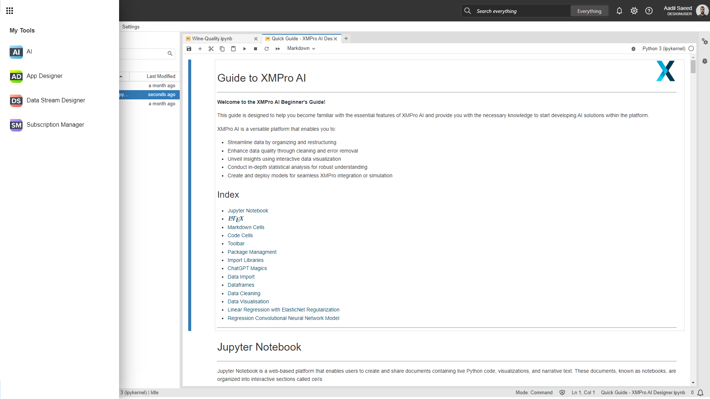
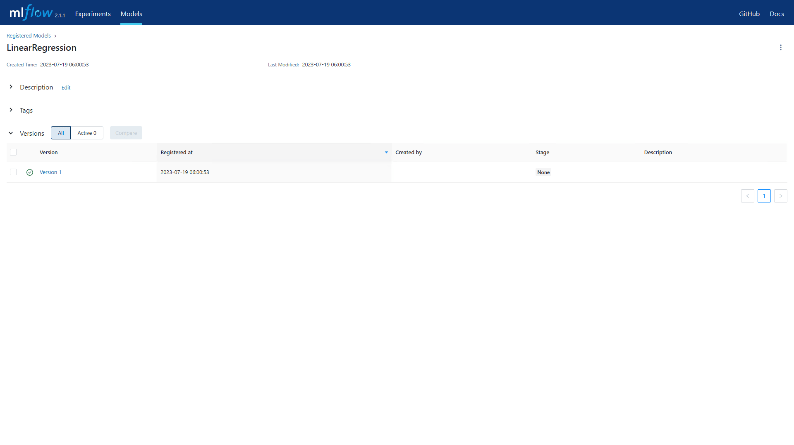
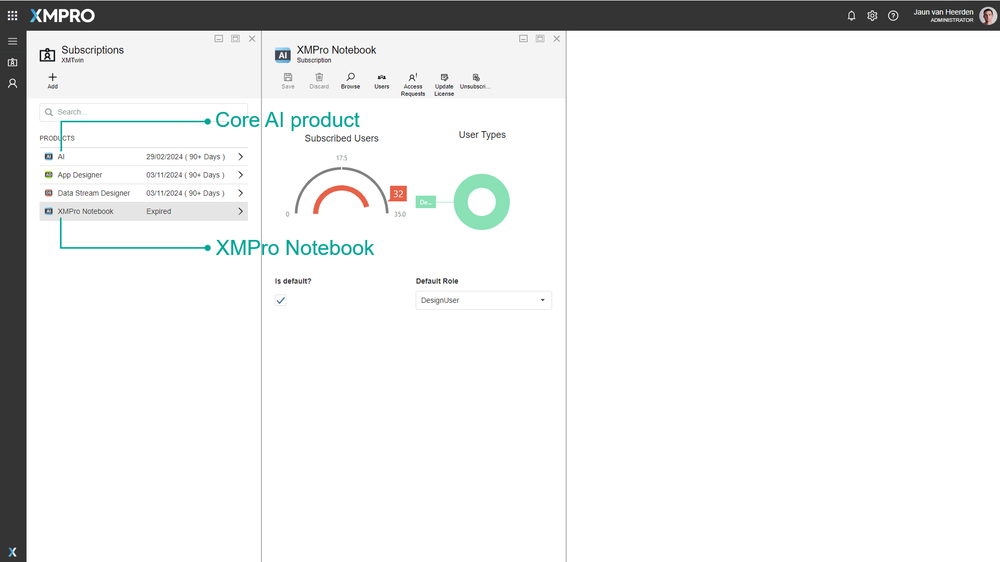

XMPro Notebook
Overview
XMPro Notebook provides an intuitive and flexible interface for data analysis, scientific computing, machine learning, and more. Users can write code and execute cells independently, which facilitates step-by-step exploration and experimentation with real-time data.
Getting Started
XMPro Notebook is an embedded version of Jupyter and can be accessed from the waffle menu on the top left navigation, and by navigating to "AI".

Quickstart Guide
Once opened there is a handy quick-start guide that acts as an introduction on how to use XMPro Notebook.
Note
The first time an XMPro notebook user session loads, the infrastructure is provisioned in real-time, meaning that the application will take a few seconds to load.
ChatGPT
XMPro AI has built-in ChatGPT functionality through the use of Python Magics. Once you've provided your ChatGPT API Key, you can use line magic to provide a single line of input, or cell magic to provide multiple lines of input.
Set your ChatGPT API Key
# Set your ChatGPT API Key
%chatgpt -k "<your ChatGPT api-key>"
Line magic: %chatgpt
Example input:
%chatgpt "show a correlation plot for the iris dataset"
Example output:
import seaborn as sns import matplotlib.pyplot as plt
iris = sns.load_dataset('iris') corr = iris.corr()
sns.heatmap(corr, annot=True, cmap='coolwarm') plt.show()
Cell magic: %%chatgpt
Example input:
%%chatgpt "improve this plot example"
import matplotlib.pyplot as plt
x = [1, 2, 3, 4, 5] y = [5, 4, 3, 2, 1]
plt.plot(x, y, 'ro') plt.xlabel('X axis') plt.ylabel('Y axis') plt.title('Example Plot') plt.show()
Example output:
import matplotlib.pyplot as plt
import numpy as np
# Generate some random data
x = np.random.randint(0, 10, size=50)
y = np.random.randint(0, 10, size=50)
colors = np.random.rand(50)
# Create a scatter plot with different marker sizes and colors
plt.scatter(x, y, s=50*x, c=colors, alpha=0.5)
# Set axis labels, limits, and title
plt.xlabel('X axis')
plt.ylabel('Y axis')
plt.xlim(0, 10)
plt.ylim(0, 10)
plt.title('Random Data Scatter Plot')
# Add a colorbar legend
plt.colorbar()
# Display the plot
plt.show()
MLops
MLflow is a well-known open-source MLops platform that streamlines the machine learning lifecycle: to create instances of models and run them in a structured and organized manner.
This example illustrates how to leverage the MLflow Python library to create an instance of a machine learning model and execute it within your MLflow environment.
Example input:
# Importing necessary libraries
from mlflow.models.signature import ModelSignature
from mlflow.types.schema import ColSpec, Schema
import mlflow
from sklearn.linear_model import LinearRegression
import numpy as np
# Generate some sample data for training
X = np.array([[1], [2], [3], [4], [5]])
y = np.array([2, 4, 6, 8, 10])
# Create an instance of Linear Regression model
model_lr = LinearRegression()
# Fit the model to the training data
model_lr.fit(X, y)
# Define a schema for the input and output of your model
# In this case, both input and output are single columns of string type
sig = ModelSignature(
inputs=Schema([ColSpec(name="input", type="string")]),
outputs=Schema([ColSpec(name="output", type="string")]),
)
# Set the tracking URI for MLflow
# This is the address where the MLflow server is running
# Replace the IP address and port number with the ones for your server
mlflow.set_tracking_uri('http://<URI>:<PORT>')
# Start a new MLflow run
# This represents a single execution of the model training code
mlflow.start_run()
# Log the trained model with MLflow
mlflow.sklearn.log_model(
sk_model=model_lr,
artifact_path="model",
registered_model_name="LinearRegression",
signature=sig
)
# End the MLflow run
mlflow.end_run()
Example output:
Successfully registered model 'LinearRegression'.
Created version '1' of model 'LinearRegression'.

Libraries
Libraries are a collection of pre-written code and functions that can be imported and used in programs to simplify development and add additional functionality. The following Python libraries are pre-installed in XMPro Notebook:
altair beautifulsoup4 bokeh bottleneck cloudpickle conda-forge::blas=*=openblas cython dask dill h5py |
ipywidgets matplotlib-base mlflow numba numexpr numpy openai opencv python pandas patsy protobuf |
pytables scikit-image scikit-learn scipy seaborn sqlalchemy statsmodels sympy widgetsnbextension xlrd |
|---|
If any additional libraries are needed, the installation can be performed in the Notebook Cell. Below is an example command for a Python library:
pip install <your library name>
Please contact XMPro if you would like to propose another library added to the set of defaults.
Warning
Any library you load is only valid for the session and will need to be reinstalled when a new session is created.
Licensing
Unlike other XMPro products, two product licenses are required: one for the core AI product, and a second for XMPro Notebook. For more information on how to request a license, please view the instructions on how to Request a License.

Last modified: August 06, 2025